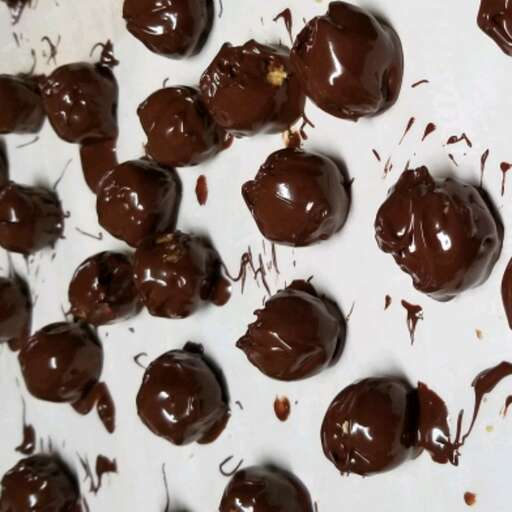

Home
Chocolate Balls

Come On Suck My Chocolate Salty Balls!
Put 'em in yo mouth and suck 'em!
Ingredients
- 1 cup peanut butter
- ¾ cup confectioners' sugar
- 1 cup graham cracker crumbs
- 2 cups semisweet chocolate chips
- 3 (1 ounce) squares semisweet chocolate, chopped
- 1 tablespoon shortening
Steps
- n a medium bowl, mix together the peanut butter and confectioners' sugar until smooth. Stir in graham cracker crumbs until well blended. Form the dough into 1 inch balls by rolling in your hands, or by using a cookie scoop.
- Melt the semisweet chocolate chips, semisweet chocolate squares, and the shortening in the top half of a double boiler. Use a fork to dip the balls into the melted chocolate, and place on wax paper to cool until set.